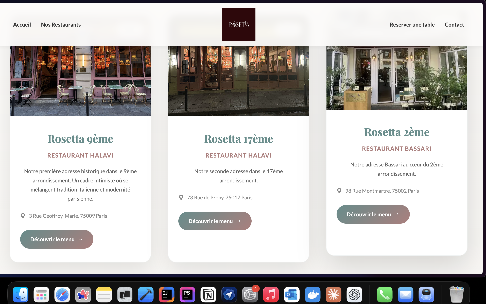
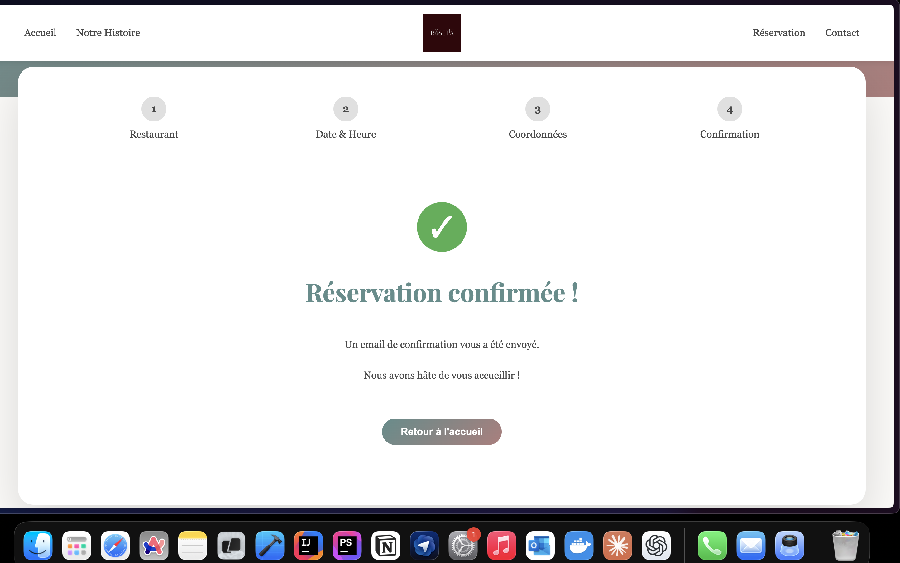
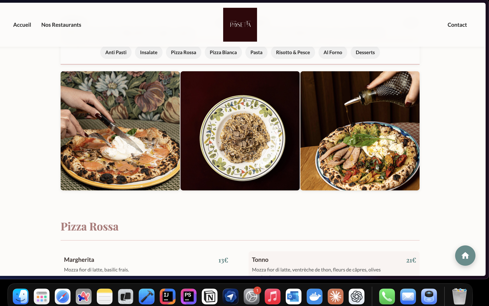
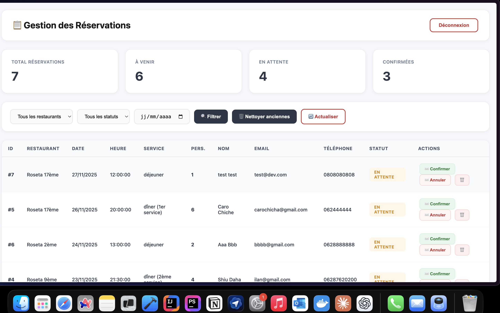

Rosetta — site de réservation de restaurant
Site complet pour le groupe de restaurants Rosetta : pages vitrines, menus illustrés, tunnel de réservation en plusieurs étapes et back-office pour gérer toutes les réservations.
- PHP / HTML / CSS / JS
- MySQL
- Emails de confirmation
- Dashboard d’administration
Problématique
Rosetta avait besoin d’un site unique pour présenter ses trois restaurants (9ᵉ, 17ᵉ et 2ᵉ arrondissement) et surtout d’un système de réservation clair pour les clients et simple à gérer pour l’équipe.
Avant ce projet, les réservations arrivaient par téléphone ou via des messages éparpillés, ce qui rendait le suivi compliqué (doubles réservations, oublis, manque de visibilité sur les services remplis).
Objectifs
- Avoir un site vitrine moderne pour les trois adresses.
- Mettre en place un tunnel de réservation complet (restaurant → date & heure → coordonnées → confirmation).
- Envoyer automatiquement un email de confirmation au client.
- Donner à l’équipe un dashboard de suivi des réservations.

Page d’accueil Rosetta : présentation du groupe, ambiance visuelle et accès direct aux restaurants.
Choix du restaurant & de la date
Le client commence par choisir l’adresse qui l’intéresse (9ᵉ, 17ᵉ ou 2ᵉ). Chaque carte affiche l’ambiance, l’adresse, les informations pratiques et un bouton “Découvrir le menu”.
Ensuite, il passe à la sélection de la date, de l’heure et du service (déjeuner ou dîner). Le formulaire guide le client étape par étape pour éviter les erreurs.

Étape 1 : choix du restaurant avec cartes détaillées pour chaque adresse.
Coordonnées & confirmation
À l’étape suivante, le client renseigne ses coordonnées (nom, téléphone, email, nombre de personnes, éventuels commentaires). Les données sont vérifiées côté front puis envoyées au serveur.
Une fois la réservation enregistrée, une page de confirmation s’affiche et un email récapitulatif est envoyé automatiquement au client.

Étape finale du tunnel : réservation confirmée + email envoyé au client.
Menus & galeries photos
Le site propose aussi un affichage des menus et des plats avec de vraies photos du restaurant. Les catégories (pizzas, pasta, desserts…) sont filtrables via un système d’onglets.

Menus et galerie : navigation par catégories et mise en avant des visuels des plats.
Back-office de gestion des réservations
Côté administration, j’ai développé un dashboard pour l’équipe Rosetta :
- Vue globale du nombre total de réservations, à venir, en attente et confirmées.
- Filtre par restaurant, par statut et par date.
- Tableau détaillé (nom, email, téléphone, service, nombre de personnes…).
- Boutons d’action : confirmer, annuler, supprimer la réservation.
- Bouton pour nettoyer automatiquement les anciennes réservations.

Dashboard de gestion : statistiques en haut, filtres et tableau des réservations en temps réel.
Partie technique & compétences
Stack technique
- Back-end : PHP (logique métier, sauvegarde des réservations, envoi d’emails).
- Base de données : MySQL (restaurants, créneaux, réservations, statuts).
- Front-end : HTML / CSS / JavaScript pour le tunnel en plusieurs étapes.
- Intégration : envoi automatique d’email de confirmation après chaque réservation.
Ce que j’ai travaillé sur ce projet
- Conception du tunnel de réservation de bout en bout (UX et logique).
- Création d’un dashboard admin avec filtres, actions rapides et compteurs.
- Gestion des statuts de réservation (en attente, confirmée, annulée).
- Intégration d’un design cohérent avec l’identité visuelle du restaurant.